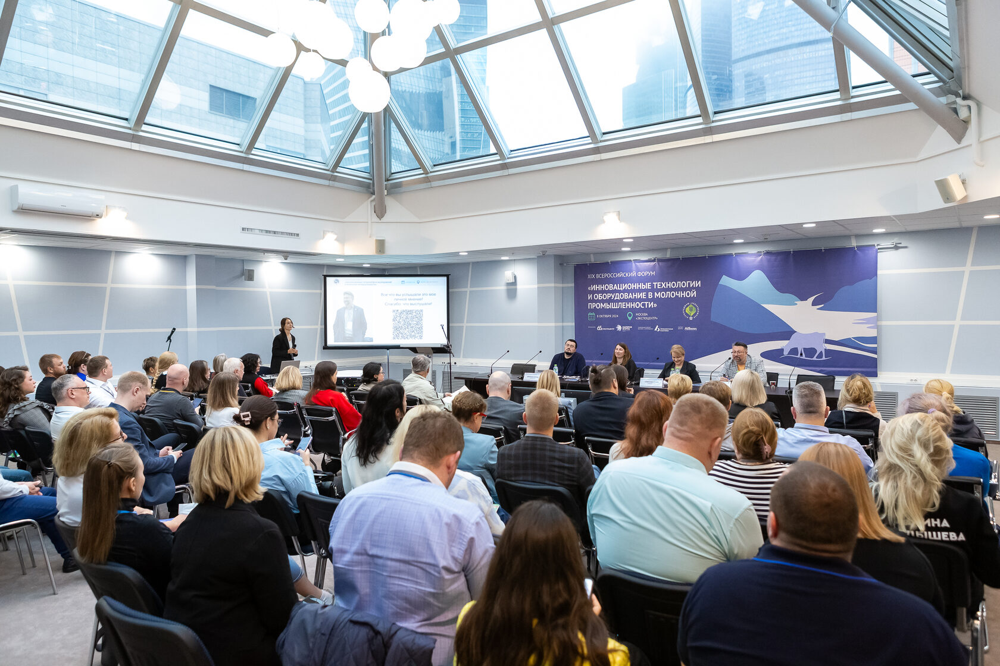
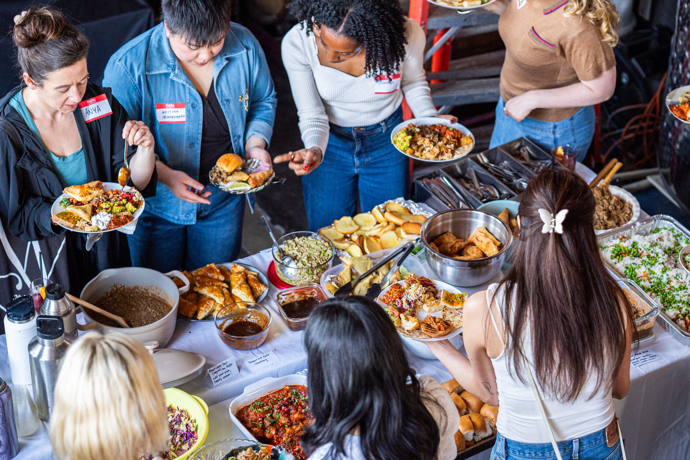

Всероссийская деловая конференция
Стратегические вызовы АПК: Готовая Еда
Получите карту решений, которые помогут производить готовую еду быстрее, безопаснее и прибыльнее в новой рыночной реальности.
Почему сейчас
Рынок готовой еды перестал быть нишей. Теперь это операционная система ритейла, HoReCa и доставки.
Конференция помогает производителям и агрокомпаниям нащупать дорогу в новую рыночную реальность: меняется покупатель, растёт спрос на готовые решения, обостряется конкуренция за маржу, качество и скорость вывода продукта на полку.
Главный фокус — не абстрактные тренды, а решения, которые влияют на ассортимент, производство, логистику, безопасность, прослеживаемость и экономику продукта.
Выгоды от участия
Четыре причины быть в зале
Инсайды из первых рук
Аналитика рынка, ниши роста, маржинальность и портрет покупателя от экспертов FMCG, ритейла и отраслевых ассоциаций.
Технологии на практике
Оборудование, заморозка, упаковка, автоматизация, ИИ и санитарный дизайн в привязке к реальной экономике производства.
Нетворкинг с рынком
Производители, фабрики-кухни, dark kitchen, ритейл, HoReCa, поставщики решений и технологические специалисты в одном пространстве.
Диалог о правилах игры
ХАССП, маркировка, прослеживаемость, безопасность, требования ритейла и ответственность производителя без бюрократического тумана.
Кому подойдет мероприятие
Для управленцев и специалистов, которые отвечают за рост, качество и экономику готовой еды
Карта индустрии
От спроса до полки: где в 2026 году рождается прибыль готовой еды
Спрос
Покупатель, поводы потребления, новые домохозяйства, доставка.
R&D
Рецептуры, ассортимент, meal-kit, ресторанное качество в упаковке.
Производство
Фабрики-кухни, dark kitchen, линии, персонал, потери.
Технологии
IQF, MAP, фасовка, ИИ, прогнозирование, автоматизация.
Канал
Ритейл, HoReCa, СТМ, e-commerce, speed-to-shelf.
Контроль
ХАССП, маркировка, микробиология, прослеживаемость.
Деловая программа
Четыре сессии о рынке, фабриках-кухнях, технологиях и регулировании
* - Состав спикеров и отдельные темы могут быть уточнены программным комитетом.
11:00 - 12:30
90 минут
Панельная дискуссия + аналитические доклады
Новый стол: потребительская революция и стратегические вызовы индустрии и рынка готовой еды
Российский рынок готовой еды вступил в период структурных изменений — и они не закончатся в ближайшие годы. Молодые городские жители всё реже стоят у плиты: одиночные домохозяйства, плотный рабочий график и нормализация доставки формируют устойчивый спрос на качественную готовую еду без усилий. Производители отвечают на этот запрос адаптацией ассортимента: малые порции, высокая степень готовности, ресторанное качество в упаковке.
Мировые тренды — прежде всего японский и южнокорейский опыт — показывают, куда движется этот рынок: Россия идёт тем же путём с отставанием в 2–4 года. Открывающая сессия задаёт аналитическую рамку для всей конференции: что происходит с рынком, где незанятые ниши, кто выигрывает и где сосредоточена высокая маржинальность.
- Структура потребления готовой еды в России: объём, сегменты, динамика 2022-2026.
- Портрет нового покупателя: одиночные домохозяйства, занятая молодёжь, поколение, которое не готовит.
- Наиболее частые поводы потребления: когда, где и почему покупают готовое.
- Незанятые ниши: где ещё нет сильных игроков и что это значит для производителей.
- Источники высокой маржинальности: в каких сегментах и форматах зарабатывают лучшие игроки.
- Мировые тренды: японский, корейский, европейский опыт и горизонт для России на 1-3 года.
- HoReCa как референс и канал: как ресторанная культура формирует запрос к производителям.
- Региональная экспансия: Москва задаёт тон, регионы догоняют — с каким лагом.
- Прогноз до 2029 года: ёмкость рынка и инвестиционные приоритеты.
Иван Федяков
Генеральный директор, INFOLine
Андрей Дальнов
Руководитель Центра отраслевой экспертизы, Россельхозбанк
Сергей Юшин
Ответственный секретарь, Национальная мясная ассоциация
Андрей Кривенко
Основатель, ВкусВилл
Представитель HoReCa
Директор по закупкам, крупная сеть или агрегатор доставки
Представитель X5 Group
Директор по категории готовой еды, уточняется
13:00 - 14:30
90 минут
Кейс-сессия + панельная дискуссия
От цеха до чека: фабрики-кухни, dark kitchen и новые форматы готовой еды
Фабрики-кухни крупнейших ретейлеров, dark kitchen агрегаторов доставки, производственные базы кейтеринга — все они решают одну задачу: производить готовую еду предсказуемого качества, в нужном объёме, с минимальными потерями по всей цепочке.
Параллельно на рынок выходят нестандартные форматы: meal-kit, нарезка, очищенные и фасованные продукты, блюда по экзотическим рецептурам. Как вывести такой продукт через ретейлеров и HoReCa, какие требовались вложения, какие каналы сработали — и как выстроить маркетинг, который обеспечит объёмы? В этой сессии — реальный опыт производителей, закупщиков и операторов, которые уже прошли этот путь.
- Архитектура фабрики-кухни ритейла: пространство, оборудование, процессы.
- Dark kitchen: бизнес-модель, масштабирование, специфика оборудования.
- Meal-kit как формат: производство, логистика, позиционирование — что работает в России.
- Нестандартные продукты для готового формата: нарезка, очищенные и фасованные продукты, экзотические рецептуры.
- Вывод на рынок через сети и HoReCa: что получилось, где возникали сложности, сколько стоило.
- Маркетинг готовой еды: концепция, цена, дегустации, планирование объёмов.
- Холодовая цепь и speed-to-shelf как конкурентное преимущество.
- Себестоимость и ROI автоматизации: где оборудование реально даёт экономику.
Представитель Ленты
Директор производства или руководитель фабрики-кухни
Представитель ВкусВилл
Директор по производству кулинарии
Представитель доставки
Операционный директор dark kitchen, уточняется
Закупщик ритейла
Категорийный менеджер готовой еды
Виктор Линник
Совладелец, Мираторг
Эксперт по брендингу
Упаковка, дегустации, digital, объёмное планирование
15:00 - 16:00
60 минут
Технологические доклады + дискуссия
Через технологии к прибыли: оборудование, заморозка, автоматизация и ИИ
Выбор технологии заморозки — это не техническое решение, это решение о качестве продукта через полгода. Тип упаковочной линии — это решение о себестоимости, экологичности и сроке хранения одновременно. Степень автоматизации — это решение о зависимости от рынка труда и масштабируемости бизнеса.
В этой сессии — конкретные технологии, конкретные результаты и честный разговор о том, что окупается и что нет. Отдельно — новинки, позволяющие снизить издержки, упростить логистику и улучшить качество: от шоковой заморозки до ИИ-оптимизации производственных процессов.
- IQF, шоковая и криогенная заморозка: сравнение по продуктам, качеству и стоимости.
- Оборудование для нарезки и термообработки: ключевые параметры выбора для готовой еды.
- Автоматизация порционирования и фасовки: ROI и сроки окупаемости для разных масштабов производства.
- MAP-упаковка, активные барьерные технологии и продление сроков хранения.
- Санитарный дизайн помещений: требования, решения, типичные ошибки.
- ИИ-оптимизация: прогнозирование потребления, рецептуры, снижение отходов.
- Мировые инновации: что применяют в Японии, Германии, Нидерландах — и что придёт в Россию.
- Импортозамещение и локализация: реальное состояние рынка оборудования в 2026 году.
Андрей Лисицын
ФГБНУ ВНИИМП им. В.М. Горбатова
Главный технолог
Производитель замороженной готовой еды
Поставщик оборудования
Экспонент АГРОПРОДМАШ 2026
Руководитель R&D
Поставщик ингредиентов и функциональных добавок
Эксперт по автоматизации
Производственная компания с автоматизированными линиями
Научный сотрудник
Всероссийский НИИ пищевых технологий
16:20 - 17:20
60 минут
Панельная дискуссия с регуляторами и производителями
Прозрачная цепочка: безопасность, прослеживаемость и регулирование готовой еды
Безопасность готовой еды — больше не только про ХАССП и лабораторию. Это про цифровую прослеживаемость на каждом этапе от поставщика сырья до покупателя. Это про маркировку, которая становится обязательной. Это про ответственность, которая теперь персонифицирована и задокументирована.
Законодательство в этой сфере активно меняется, требования ужесточаются, а производители — особенно малый и средний бизнес — часто узнают об изменениях постфактум. Финальная сессия — прямой разговор между регуляторами, производителями и ретейлерами о том, что уже обязательно, что будет обязательно в ближайшие два года, и как выстроить систему контроля, которая защищает бизнес, а не только выполняет требования.
- Актуальные изменения в регулировании производства и оборота готовой еды: 2025-2027.
- Цифровая маркировка и прослеживаемость: Честный знак, ГИС МТ.
- ХАССП на практике: рабочая система вместо бумажной формальности.
- Микробиологический контроль, продление сроков и нормативные рамки.
- Ответственность производителя: претензии, отзывы продукции, репутационные риски.
- Экспортные стандарты: требования рынков ЕАЭС и возможности для российских производителей.
- Требования ритейла к поставщикам: что проверяют Лента и ВкусВилл перед вводом в матрицу.
Представитель Минпромторга
Департамент пищевой промышленности
Представитель Роспотребнадзора
Надзор за безопасностью пищевых продуктов
Андрей Лисицын
ВНИИМП им. В.М. Горбатова, стандартизация
Представитель ЦРПТ
Маркировка и прослеживаемость
Директор по качеству
Лента или ВкусВилл, требования к поставщикам
Юрист по пищевому праву
Техническое регулирование, отзывы, ЕАЭС
О выставке:
«АГРОПРОДМАШ» – международная выставка оборудования, технологий, сырья и ингредиентов для пищевой и перерабатывающей промышленности.
Преимущество и уникальность выставки заключается в том, что экспозиция демонстрирует оборудование и технологии для всей цепочки: от производства сырья и ингредиентов до выпуска готового продукта, его упаковки, контроля качества, охлаждения, хранения и логистических решений.
Перейти на сайт выставки
Оборудование
IQF и шоковая заморозка
MAP-упаковка
Функциональные ингредиенты
Автоматизация линий
Маркировка и контроль
Атмосфера
Масштаб отрасли в одном пространстве

Зал конференции Выставочная экспозиция
Выставочная экспозиция
 Производственная линия
Производственная линия
 Упаковочные технологии
Упаковочные технологии

Нетворкинг Готовая еда будущего
Готовая еда будущего
Бесплатная регистрация
Зарегистрируйтесь на конференцию
Оставьте данные, и команда организаторов отправит подтверждение участия на email. Участие бесплатное по предварительной регистрации.
Организаторы
Команды, которые собирают выставку и деловую программу
Организатор выставки «Агропродмаш-2026»
АО «Экспоцентр» – всемирно известная российская выставочная компания, неизменно сохраняющая статус ведущего организатора крупнейших в России, СНГ и Восточной Европе международных отраслевых выставок, более чем с 60-летним опытом работы.
Организатор конференции «Стратегические вызовы АПК: готовая еда»
Конгрессно-Выставочная Компания «ИМПЕРИЯ ФОРУМ» – организатор деловых мероприятий на агропромышленном рынке, в том числе одного из ключевых отраслевых Форумов «Стратегические вызовы АПК: инвестиции, цифровые технологии, повышение эффективности», и один из ключевых партнеров АО «ЭКСПОЦЕНТР» по организации деловой программы крупнейшей отраслевой выставки «Агропродмаш».
Программный комитет
Хотите выступить с экспертной сессией?
Комитет программы открыт к предложениям от производителей, технологов, регуляторов и компаний, которые готовы показать работающую практику рынка.